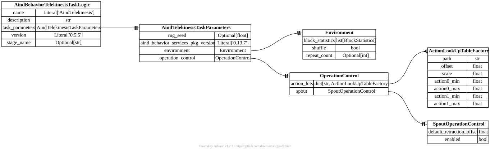

api.task_logic¶
{kind=link}

- class aind_behavior_telekinesis.task_logic.Action(*, reward_probability: Distribution, <aind_behavior_services.schema._SgenTypenameAnnotation object at 0x7fecf06efcb0>]=Scalar(family=<DistributionFamily.SCALAR: 'Scalar'>, distribution_parameters=ScalarDistributionParameter(family=<DistributionFamily.SCALAR: 'Scalar'>, value=1.0), truncation_parameters=None, scaling_parameters=None), reward_amount: Distribution, <aind_behavior_services.schema._SgenTypenameAnnotation object at 0x7fecf06efcb0>]=Scalar(family=<DistributionFamily.SCALAR: 'Scalar'>, distribution_parameters=ScalarDistributionParameter(family=<DistributionFamily.SCALAR: 'Scalar'>, value=1.0), truncation_parameters=None, scaling_parameters=None), reward_delay: Distribution, <aind_behavior_services.schema._SgenTypenameAnnotation object at 0x7fecf06efcb0>]=Scalar(family=<DistributionFamily.SCALAR: 'Scalar'>, distribution_parameters=ScalarDistributionParameter(family=<DistributionFamily.SCALAR: 'Scalar'>, value=1.0), truncation_parameters=None, scaling_parameters=None), action_duration: Distribution, <aind_behavior_services.schema._SgenTypenameAnnotation object at 0x7fecf06efcb0>]=Scalar(family=<DistributionFamily.SCALAR: 'Scalar'>, distribution_parameters=ScalarDistributionParameter(family=<DistributionFamily.SCALAR: 'Scalar'>, value=0.5), truncation_parameters=None, scaling_parameters=None), upper_action_threshold: Distribution, <aind_behavior_services.schema._SgenTypenameAnnotation object at 0x7fecf06efcb0>]=Scalar(family=<DistributionFamily.SCALAR: 'Scalar'>, distribution_parameters=ScalarDistributionParameter(family=<DistributionFamily.SCALAR: 'Scalar'>, value=20000.0), truncation_parameters=None, scaling_parameters=None), lower_action_threshold: Distribution, <aind_behavior_services.schema._SgenTypenameAnnotation object at 0x7fecf06efcb0>]=Scalar(family=<DistributionFamily.SCALAR: 'Scalar'>, distribution_parameters=ScalarDistributionParameter(family=<DistributionFamily.SCALAR: 'Scalar'>, value=0.0), truncation_parameters=None, scaling_parameters=None), is_operant: bool = True, time_to_collect: Distribution, <aind_behavior_services.schema._SgenTypenameAnnotation object at 0x7fecf06efcb0>] | None=None, continuous_feedback: ContinuousFeedback | None = None)[source]¶
Bases:
BaseModelDefines an abstract class for an harvest action
- continuous_feedback: ContinuousFeedback | None[source]¶
- class aind_behavior_telekinesis.task_logic.ActionLookUpTableFactory(*, path: str, offset: float = 0, scale: float = 1, action0_min: float, action0_max: float, action1_min: float, action1_max: float)[source]¶
Bases:
BaseModelFactory for loading and configuring a look-up table image used to map action inputs to output values
- type aind_behavior_telekinesis.task_logic.ActionSource = Annotated[LoadCellActionSource | BehaviorAnalogInputActionSource, FieldInfo(annotation=NoneType, required=True, discriminator='action_source')][source]¶
- class aind_behavior_telekinesis.task_logic.ActionSourceType(*values)[source]¶
Bases:
str,EnumDefines the source of the data to use in the action
- class aind_behavior_telekinesis.task_logic.AindBehaviorTelekinesisTaskLogic(*, name: Literal['AindTelekinesis'] = 'AindTelekinesis', description: str = '', task_parameters: AindTelekinesisTaskParameters, version: Literal['0.4.0-rc4'] = '0.4.0-rc4', stage_name: str | None = None)[source]¶
Bases:
TaskTask logic definition for the Telekinesis behavior task
- model_config = {'extra': 'forbid', 'str_strip_whitespace': True, 'strict': True, 'validate_assignment': True, 'validate_default': True}[source]¶
Configuration for the model, should be a dictionary conforming to [ConfigDict][pydantic.config.ConfigDict].
- task_parameters: AindTelekinesisTaskParameters[source]¶
- class aind_behavior_telekinesis.task_logic.AindTelekinesisTaskParameters(*, rng_seed: float | None = None, aind_behavior_services_pkg_version: Annotated[Literal['0.13.6'], _PydanticGeneralMetadata(pattern='^(0|[1-9]\\d*)\\.(0|[1-9]\\d*)\\.(0|[1-9]\\d*)(?:-((?:0|[1-9]\\d*|\\d*[a-zA-Z-][0-9a-zA-Z-]*)(?:\\.(?:0|[1-9]\\d*|\\d*[a-zA-Z-][0-9a-zA-Z-]*))*))?(?:\\+([0-9a-zA-Z-]+(?:\\.[0-9a-zA-Z-]+)*))?$')] = '0.13.6', environment: Environment, operation_control: OperationControl, **extra_data: Any)[source]¶
Bases:
TaskParametersTask parameters for the Telekinesis task
- environment: Environment[source]¶
- model_config = {'extra': 'allow', 'str_strip_whitespace': True, 'strict': True, 'validate_assignment': True, 'validate_default': True}[source]¶
Configuration for the model, should be a dictionary conforming to [ConfigDict][pydantic.config.ConfigDict].
- operation_control: OperationControl[source]¶
- class aind_behavior_telekinesis.task_logic.AudioFeedback(*, continuous_feedback_mode: Literal[ContinuousFeedbackMode.AUDIO] = ContinuousFeedbackMode.AUDIO, converter_lut_input: Annotated[List[Annotated[float, FieldInfo(annotation=NoneType, required=True, metadata=[Ge(ge=0), Le(le=1)])]], MinLen(min_length=2)] = [0, 1], converter_lut_output: Annotated[List[float], MinLen(min_length=2)] = [0, 1])[source]¶
Bases:
_ContinuousFeedbackBaseContinuous feedback delivered via audio
- class aind_behavior_telekinesis.task_logic.BehaviorAnalogInputActionSource(*, action_source: Literal[ActionSourceType.BEHAVIOR_ANALOG_INPUT] = ActionSourceType.BEHAVIOR_ANALOG_INPUT, channel: Annotated[int, Ge(ge=0), Le(le=1)] = 0)[source]¶
Bases:
_ActionSourceAction source read from a behavior board analog input channel
- class aind_behavior_telekinesis.task_logic.Block(*, mode: Literal[BlockStatisticsMode.BLOCK] = BlockStatisticsMode.BLOCK, trials: List[Trial] = [], shuffle: bool = False, repeat_count: int | None = 0)[source]¶
Bases:
BaseModelA fixed list of trials to run in sequence
- class aind_behavior_telekinesis.task_logic.BlockGenerator(*, mode: Literal[BlockStatisticsMode.BLOCK_GENERATOR] = BlockStatisticsMode.BLOCK_GENERATOR, block_size: Distribution, <aind_behavior_services.schema._SgenTypenameAnnotation object at 0x7fecf06efcb0>]=UniformDistribution(family=<DistributionFamily.UNIFORM: 'Uniform'>, distribution_parameters=UniformDistributionParameters(family=<DistributionFamily.UNIFORM: 'Uniform'>, min=50.0, max=60.0), truncation_parameters=None, scaling_parameters=None), trial_statistics: Trial)[source]¶
Bases:
BaseModelGenerates blocks of trials by sampling from a trial statistics template
- type aind_behavior_telekinesis.task_logic.BlockStatistics = Annotated[Block | BlockGenerator, FieldInfo(annotation=NoneType, required=True, discriminator='mode')][source]¶
- class aind_behavior_telekinesis.task_logic.BlockStatisticsMode(*values)[source]¶
Bases:
str,EnumDefines the mode of the environment
- type aind_behavior_telekinesis.task_logic.ContinuousFeedback = Annotated[ManipulatorFeedback | AudioFeedback, FieldInfo(annotation=NoneType, required=True, discriminator='continuous_feedback_mode')][source]¶
- class aind_behavior_telekinesis.task_logic.ContinuousFeedbackMode(*values)[source]¶
Bases:
str,EnumDefines the feedback mode
- class aind_behavior_telekinesis.task_logic.Environment(*, block_statistics: List[BlockStatistics], shuffle: bool = False, repeat_count: int | None = 0)[source]¶
Bases:
BaseModelDefines the structure of the behavioral environment as a sequence of blocks
- block_statistics: List[BlockStatistics][source]¶
- class aind_behavior_telekinesis.task_logic.LoadCellActionSource(*, action_source: Literal[ActionSourceType.LOADCELL] = ActionSourceType.LOADCELL, channel: Annotated[int, Ge(ge=0), Le(le=7)] = 0)[source]¶
Bases:
_ActionSourceAction source read from a load cell channel
- class aind_behavior_telekinesis.task_logic.LutSampler2D(*, sampler_type: Literal['LUT'] = 'LUT', lut_reference: str)[source]¶
Bases:
BaseModel
- class aind_behavior_telekinesis.task_logic.ManipulatorFeedback(*, continuous_feedback_mode: Literal[ContinuousFeedbackMode.MANIPULATOR] = ContinuousFeedbackMode.MANIPULATOR, converter_lut_input: Annotated[List[Annotated[float, FieldInfo(annotation=NoneType, required=True, metadata=[Ge(ge=0), Le(le=1)])]], MinLen(min_length=2)] = [0, 1], converter_lut_output: Annotated[List[float], MinLen(min_length=2)] = [0, 1])[source]¶
Bases:
_ContinuousFeedbackBaseContinuous feedback delivered via manipulator position
- class aind_behavior_telekinesis.task_logic.OperationControl(*, action_luts: Dict[str, ~aind_behavior_telekinesis.task_logic.ActionLookUpTableFactory]=<factory>, spout: SpoutOperationControl = SpoutOperationControl(default_retracted_position=0, default_extended_position=0, enabled=True))[source]¶
Bases:
BaseModelTop-level operational settings including LUT registry and spout control
- action_luts: Dict[str, ActionLookUpTableFactory][source]¶
- class aind_behavior_telekinesis.task_logic.QuiescencePeriod(*, duration: Distribution, <aind_behavior_services.schema._SgenTypenameAnnotation object at 0x7fecf06efcb0>]=Scalar(family=<DistributionFamily.SCALAR: 'Scalar'>, distribution_parameters=ScalarDistributionParameter(family=<DistributionFamily.SCALAR: 'Scalar'>, value=0.5), truncation_parameters=None, scaling_parameters=None), action_threshold: float = 0, has_cue: bool = False)[source]¶
Bases:
BaseModelDefines a quiescence settings
- class aind_behavior_telekinesis.task_logic.ResponsePeriod(*, duration: Distribution, <aind_behavior_services.schema._SgenTypenameAnnotation object at 0x7fecf06efcb0>]=Scalar(family=<DistributionFamily.SCALAR: 'Scalar'>, distribution_parameters=ScalarDistributionParameter(family=<DistributionFamily.SCALAR: 'Scalar'>, value=0.5), truncation_parameters=None, scaling_parameters=None), has_cue: bool = True, action: Action = Action(reward_probability=Scalar(family=<DistributionFamily.SCALAR: 'Scalar'>, distribution_parameters=ScalarDistributionParameter(family=<DistributionFamily.SCALAR: 'Scalar'>, value=1.0), truncation_parameters=None, scaling_parameters=None), reward_amount=Scalar(family=<DistributionFamily.SCALAR: 'Scalar'>, distribution_parameters=ScalarDistributionParameter(family=<DistributionFamily.SCALAR: 'Scalar'>, value=1.0), truncation_parameters=None, scaling_parameters=None), reward_delay=Scalar(family=<DistributionFamily.SCALAR: 'Scalar'>, distribution_parameters=ScalarDistributionParameter(family=<DistributionFamily.SCALAR: 'Scalar'>, value=1.0), truncation_parameters=None, scaling_parameters=None), action_duration=Scalar(family=<DistributionFamily.SCALAR: 'Scalar'>, distribution_parameters=ScalarDistributionParameter(family=<DistributionFamily.SCALAR: 'Scalar'>, value=0.5), truncation_parameters=None, scaling_parameters=None), upper_action_threshold=Scalar(family=<DistributionFamily.SCALAR: 'Scalar'>, distribution_parameters=ScalarDistributionParameter(family=<DistributionFamily.SCALAR: 'Scalar'>, value=20000.0), truncation_parameters=None, scaling_parameters=None), lower_action_threshold=Scalar(family=<DistributionFamily.SCALAR: 'Scalar'>, distribution_parameters=ScalarDistributionParameter(family=<DistributionFamily.SCALAR: 'Scalar'>, value=0.0), truncation_parameters=None, scaling_parameters=None), is_operant=True, time_to_collect=None, continuous_feedback=None))[source]¶
Bases:
BaseModelDefines a response period
- type aind_behavior_telekinesis.task_logic.Sampler = Annotated[LutSampler2D | Sampler1D | Sampler2D, FieldInfo(annotation=NoneType, required=True, discriminator='sampler_type')][source]¶
- class aind_behavior_telekinesis.task_logic.Sampler1D(*, sampler_type: Literal['1D'] = '1D', min_from: float, max_from: float, min_to: float, max_to: float)[source]¶
Bases:
BaseModel
- class aind_behavior_telekinesis.task_logic.Sampler2D(*, sampler_type: Literal['2D'] = '2D', min_from_0: float, max_from_0: float, min_from_1: float, max_from_1: float, min_to_0: float, max_to_0: float, min_to_1: float, max_to_1: float)[source]¶
Bases:
BaseModel
- class aind_behavior_telekinesis.task_logic.SpoutOperationControl(*, default_retracted_position: float = 0, default_extended_position: float = 0, enabled: bool = True)[source]¶
Bases:
BaseModelControl settings for the reward spout
- class aind_behavior_telekinesis.task_logic.Trial(*, inter_trial_interval: Distribution, <aind_behavior_services.schema._SgenTypenameAnnotation object at 0x7fecf06efcb0>]=Scalar(family=<DistributionFamily.SCALAR: 'Scalar'>, distribution_parameters=ScalarDistributionParameter(family=<DistributionFamily.SCALAR: 'Scalar'>, value=0.5), truncation_parameters=None, scaling_parameters=None), quiescence_period: QuiescencePeriod | None = None, response_period: ResponsePeriod = ResponsePeriod(duration=Scalar(family=<DistributionFamily.SCALAR: 'Scalar'>, distribution_parameters=ScalarDistributionParameter(family=<DistributionFamily.SCALAR: 'Scalar'>, value=0.5), truncation_parameters=None, scaling_parameters=None), has_cue=True, action=Action(reward_probability=Scalar(family=<DistributionFamily.SCALAR: 'Scalar'>, distribution_parameters=ScalarDistributionParameter(family=<DistributionFamily.SCALAR: 'Scalar'>, value=1.0), truncation_parameters=None, scaling_parameters=None), reward_amount=Scalar(family=<DistributionFamily.SCALAR: 'Scalar'>, distribution_parameters=ScalarDistributionParameter(family=<DistributionFamily.SCALAR: 'Scalar'>, value=1.0), truncation_parameters=None, scaling_parameters=None), reward_delay=Scalar(family=<DistributionFamily.SCALAR: 'Scalar'>, distribution_parameters=ScalarDistributionParameter(family=<DistributionFamily.SCALAR: 'Scalar'>, value=1.0), truncation_parameters=None, scaling_parameters=None), action_duration=Scalar(family=<DistributionFamily.SCALAR: 'Scalar'>, distribution_parameters=ScalarDistributionParameter(family=<DistributionFamily.SCALAR: 'Scalar'>, value=0.5), truncation_parameters=None, scaling_parameters=None), upper_action_threshold=Scalar(family=<DistributionFamily.SCALAR: 'Scalar'>, distribution_parameters=ScalarDistributionParameter(family=<DistributionFamily.SCALAR: 'Scalar'>, value=20000.0), truncation_parameters=None, scaling_parameters=None), lower_action_threshold=Scalar(family=<DistributionFamily.SCALAR: 'Scalar'>, distribution_parameters=ScalarDistributionParameter(family=<DistributionFamily.SCALAR: 'Scalar'>, value=0.0), truncation_parameters=None, scaling_parameters=None), is_operant=True, time_to_collect=None, continuous_feedback=None)), action_source_0: ActionSource, action_source_1: ActionSource | None = None, sampler: Sampler)[source]¶
Bases:
BaseModelDefines a trial Action values are accumulated and normalized per second. E.g: Voltage/s -> LUT units/s -> Accumulate until threshold is reached
- action_source_0: ActionSource[source]¶
- action_source_1: ActionSource | None[source]¶
- model_config = {}[source]¶
Configuration for the model, should be a dictionary conforming to [ConfigDict][pydantic.config.ConfigDict].
- quiescence_period: QuiescencePeriod | None[source]¶
- response_period: ResponsePeriod[source]¶
- aind_behavior_telekinesis.task_logic.normal_distribution_value(mean: float, std: float) NormalDistribution[source]¶
Helper function to create a normal distribution for a given range.
- Parameters:
mean (float) – The mean value of the normal distribution.
std (float) – The standard deviation of the normal distribution.
- Returns:
The normal distribution type.
- Return type:
distributions.NormalDistribution
- aind_behavior_telekinesis.task_logic.scalar_value(value: float) Scalar[source]¶
Helper function to create a scalar value distribution for a given value.
- Parameters:
value (float) – The value of the scalar distribution.
- Returns:
The scalar distribution type.
- Return type:
distributions.Scalar
- aind_behavior_telekinesis.task_logic.uniform_distribution_value(min: float, max: float) UniformDistribution[source]¶
Helper function to create a uniform distribution for a given range.
- Parameters:
min (float) – The minimum value of the uniform distribution.
max (float) – The maximum value of the uniform distribution.
- Returns:
The uniform distribution type.
- Return type:
distributions.Uniform